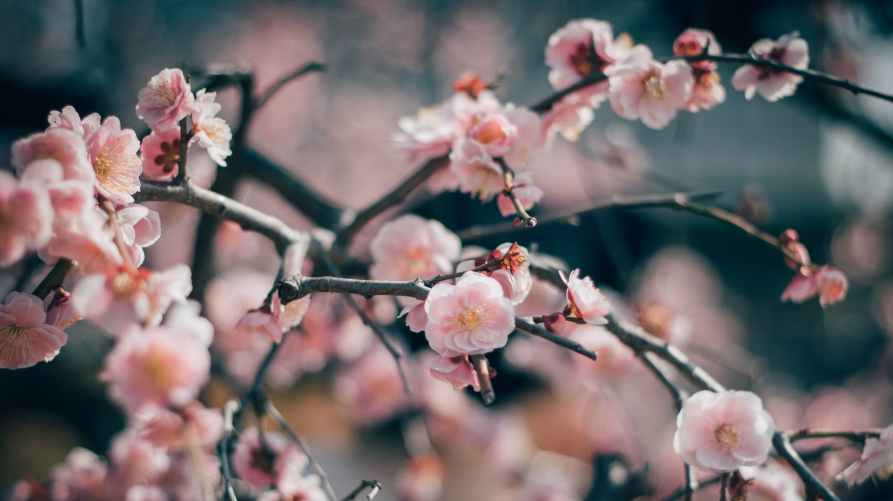

Hanami (花見)
Hanami (lit. "ver flores") es la tradición japonesa de observar la belleza de las flores, pero por lo general se asocia esta palabra al período en que florecen los cerezos y en el que los japoneses acuden en masa a parques y jardines a contemplar sus flores (sakura).
De finales de febrero a principios de mayo, los cerezos florecen por todo Japón, de sur a norte acorde a los distintos climas existentes en las diversas regiones, y dependiendo de la variación del clima en cada temporada o año. Los primeros cerezos del año florecen en las islas de Okinawa a fines de febrero o a principios de marzo (la región más meridional) y los últimos en la isla de Hokkaidō aproximadamente la última semana de abril o principios de mayo (la región más septentrional). Ésta es la temporada habitual, pero se debe tener presente que la floración puede comenzar incluso en el mes de enero en el sur.
El pronóstico de florecimiento (sakurazensen (桜前線)) es anunciado cada año por la oficina de meteorología. En esta celebración, la gente se dirige a los parques a contemplar los cerezos en flor, y habitualmente realizando un pícnic, con la familia o con la empresa (es habitual ver a empleados de empresas guardando los mejores sitios debajo de los cerezos con días de antelación). El hanami continua en la noche y es llamado yozakura (夜桜 cerezos de noche).
Toyō Itō, famoso arquitecto japonés, recordaba este hecho de su infancia catalogando como la forma más bella y sencilla de hacer arquitectura, a través de los grandes manteles a la sombra de los cerezos.
Algunos lugares populares del hanami son:
- En Tokio: Parque Ueno, Chidorigafuchi
- En Fukui: Río Asuwa
- En Kioto: Parque Maruyama, Santuario Heian, Arashiyama, Kamogawa
- En Osaka: Parque del Castillo Osaka
- En Nara: Parque Nara
- En Yoshino (Prefectura de Nara): Monte Yoshino
- En Himeji: Parque del Castillo Himeji
- En Tsuyama (Prefectura de Okayama): Parque del Castillo Tsuyama
- En Hokkaidō: Parque del Castillo Goryōkaku
- En Okinawa: Parque del Castillo Nakijin